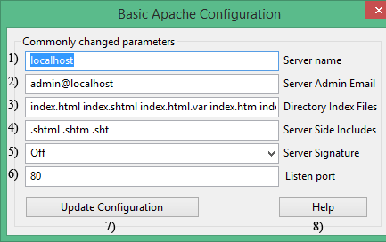

|
|
Apache Basic Configuration |
This menu allows you to change commonly configured Apache options.
Overview
The Uniform Server Zero's default installation configures the main server with the values shown at right.
Apache > Edit Basic and Modules > Edit Basic Configuration
Note 1: For the new settings to become effective you must restart the server. |
 |
Server Name
Server Name sets the hostname of your server. (This is used when creating redirection URLs).
If you put your server online, change this to your web address. For example, if you registered the domain www.fred.com, then use that.
UniServer Zero XIII does not directly change the server name in configuration files. It first sets the environment variable US_SERVERNAME which is picked-up by configuration files using ${US_SERVERNAME}. Both the main configuration file httpd.conf and httpd-vhosts.conf use this variable. It is the default host in the Vhost configuration file.
To test your web site without being connected to the Internet and to prevent your browser complaining that the "Server cannot be found", you need to use one of the following options. UniServer Zero XIII by default uses both option 1 and option2.
Option 1: To test your web site without being connected to the Internet Uniform Server Zero XIII uses a PAC file. For the above example, the following line is automatically added to this file: if (shExpMatch(host, "*www.fred.com")) return "PROXY 127.0.0.1:80";
- Changing the server name using Apache Basic Configuration menu the PAC file is automatically updated.
- If you are using the Portable Browser module, PAC file support is enabled by default.
- However if you are using the PCs default browser, you need to enable PAC file support see page Deploying PAC for details.
Option 2: To test your web site without being connected to the Internet Uniform Server Zero XIII adds an entry to your PC’s hosts file. For the above example, the following line is automatically added to this file: 127.0.0.1 www.fred.com
Note: This option is not portable for portability use option 1. However before changing Server Name or creating a Vhost disable option 2 as follows:
- Edit file C:\UniServerZ\home\us_config\us_config.ini
- Locate section [HOSTS]
- Change the following line: EditHostsFileEnabled=True To: EditHostsFileEnabled=False
General note:
If you decide at a latter date to add an entry to the hosts file either use the Uniform Server edit hosts file utility or manually enter the IP address/name pair as follows:
- Navigate to folder: C:\WINDOWS\system32\drivers\etc
- Open the file hosts
- At the end of this file, add: 127.0.0.1 www.fred.com (use your own domain)
- Save this file. Now when you type http://www.fred.com (your domain) into your browser address bar you will be able to view your web site.
Host Name Resolution Order
The following is a general sequence for host name resolution:
- Browser checks to see if the name already resolved.
- Not resolved searches a local PAC file
- Not resolved searches a local hosts file
- Not resolved Domain Name System (DNS) servers are queried.
- Still not resolved, NetBIOS name resolution sequence is used.
Server Admin Email
The Server Admin Email address is included with some automatically generated error pages sent to a client (user). Use a real e-mail address for users to contact you in case problems are encountered.
Note: To eliminate common typing errors the e-mail address format is checked. The following are examples of correct format: example@example.co.uk, example@fred.com and example@example.eu Error checking is a complex procedure and it is possible your valid e-mail address will be rejected. In this situation you need to edit the configuration files UniServerZ\core\apache2\conf\httpd.conf and or UniServerZ\core\apache2\conf\extra\httpd-vhosts.conf as appropriate.
Directory Index Files
When a client requests an index page without explicitly specifying it (for example www.fred.com) the list of index pages specified in Direct Index Files is searched in the order left to right. If a match is found, that index page is served. The first one that matches is served and any others that may be in the same folder are ignored.
Default list: index.html index.shtml index.html.var index.htm index.php3 index.php index.pl index.cgi
The Uniform Server’s default installation uses index.php, which is found in the root folder www. If you insert your own index.html page, this will be picked up first, overriding index.php
Server Side Includes
SSI is a server side scripting language allowing you to include the contents of a file into another using SSI commands.
To insert these commands, a special comment tag is used; for example:
<!--#include file="external.htm"--> <!--#include virtual="/external.htm"--> |
The first command assumes that the file is located in the same directory as the document containing it, while the second syntax uses an absolute reference to "external.htm", starting from your root HTML directory. |
You can insert these into an html file, but in order to process them, Apache needs to know which files types to use. The standard file extensions are:
- .shtml .shtm .sht
You can specify any file extension you like, even .htm and .html, but there is a small processing hit for each file accessed.
Server Signature
This allows Apache to add a footer line for server-generated documents. It contains the server version number, server name, and creates a "mailto:" reference to ServerAdmin.
For security reasons, this information is normally not displayed except for testing and the default is set to off.
Listen Port
This tells Apache to listen to a specific port and to accept incoming requests only on that port. Web page servers and all web browsers default to this standard port (80), which is reserverd for World Wide Web traffic (WWW). When a user types an address into a browser, the port is automatically assumed unless overridden, as explained later.
Similar to the server name UniServer Zero XIII does not directly change the server port in configuration files. It first sets the environment variable AP_PORT which is picked-up by configuration files using ${AP_PORT}. Both the main configuration file httpd.conf and httpd-vhosts.conf use this variable.
Port 80 already in use
If another program is using port 80, you will want to change the listening port to avoid conflicts, or your Apache server will not start. Before changing the Apache port, be aware that this makes the server non-standard. A preferable solution is to change the port of the conflicting program.
Apache already running
You can change the port while the server is running, but you must restart the servers after making any changes. The new settings will then be picked up by Apache.
General Note
After changing Apache's listing port, in order to display a file you must include this port number in the host name. For example suppose you have changed the port to 8080.
To view your home page you enter the following address http://localhost:8080/ into your browser address bar. Likewise to view any other page in your root folder www you would enter http://localhost:8080/mypage.html to display that page.
Note 1:
When the server starts, the correct port number is automatically added to the address and redirection takes place to the splash page. Using the above port, you will see http://localhost:8080/us_splash/index.php displayed in the address bar.
Note 2:
Alternative to the above for changing port see Change Apache ports